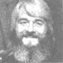
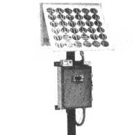

The author of this column, who has been writing for MOTHER since 1973, is the inventor of slow-scan television ... a method of amateur radio transmission that allows ham operators to both hear and see each other during shortwave broadcasts.
Some of the most active, down-home electronics folks anywhere can be found at The Farm ... the successful intentional community of 1,300 people which was founded, back in 1971, by Stephen Gaskin and friends. In fact, radio and electronics have played important roles in the development of the Summertown, Tennessee settlement right from the beginning.
At first, though, such activity was limited to the use of ham and CB radio for keeping in touch with The Farm Band when it was on the road . . . contacting friends in sister communities elsewhere in North America . . . and providing communication within The Farm itself. At some point, however, the community's licensed hams, who came to be known as "the radio crew", began to broaden their range of activities.
CENTRAL AMERICAN CONCERNS
When the 1976 earthquake hit Guatemala, a number of persons from The Farm went down to help that nation's people rebuild their lives. (This was the beginning of PLENTY . . . The Farm's relief organization that's currently active in Lesotho and Haiti.) Hams from the radio crew went, too, and during the next few years enabled community members in Guatemala to stay in touch with those back home. Furthermore, the hams started seeing ways in which the natives of the area could make good use of radio technology, so The Farm folks helped the locals start their own broadcasting station, and set up a health and safety radio network to connect a number of villages in the Lake Atitlán area with a clinic on the lakeshore.
During this same period, The Farm supported Greenpeace by supplying people-first, Stephen Skinner (WA4PVQ) and then Mark Long (WA4LXC)-to serve as radio operators on the ecology group's ship, the Rainbow Warrior. During his stint, Stephen was involved in the challenge of the Icelandic whaling fleet and the attempt to stop British dumping of nuclear wastes in the Atlantic, while Mark took part in an antinuclear demonstration in a French port. Both are back in Tennessee these days, but Greenpeace has sent one of its own people to The Farm to learn ham operation techniques.
CB AND CIVIL DEFENSE
When the CB boom reached its peak in the late 70's, the radio crew produced a homey, very humorous, and helpful book called Big Dummy's Guide to CB Radio. It's been incredibly popular for a technical publication, reaching sales of 1,100,000 copies . . . and the end isn't in sight. Recently, when CB was authorized in Britain, the radio crew put together an updated version of the book tailored to the British market, and German and French translations are coming out shortly!
In addition, The Farm has recently spawned a new organization called Solar Electronics, and-as we might expect-the radio crew is at the heart of it. Since the near disaster at Three Mile Island has caused civil defense people to become interested in the capability of monitoring radiation levels near nuclear plants, the gang at Solar Electronics came up with equipment designed to do just that.
One of their products is a small 2-1/2" X 4" X 4-1/2" DC-powered unit that they call "Radiation Alert". It contains an accurately calibrated meter and a built-in alarm that goes off at a preset radiation level.
Then, at last year's National Civil Defense Convention in Nashville, Solar Electronics demonstrated an automatic (photovoltaic) radiation monitoring system, which sends alarm-level data from any number of remote locations to a central receiver station. As Mark points out, "Civil defense would like to monitor both nuclear power-generating facilities and the weigh-scale stations along the interstate highways. In the latter case, monitors would notify state civil defense headquarters whenever any cargo trucks on the highways exceeded the maximum allowed radiation standards for vehicles transporting radioactive waste. We feel that these systems could be used by the private sector as well, as we've had several inquiries from environmental and concerned citizens' groups."
SOLAR-POWERED RADIOS
The new organization's second series of products, sun-powered radios for use in developing countries, was-as you might imagine-an outgrowth of The Farm's radio experience in Guatemala. Each of the new setups consists, basically, of a photovoltaic panel... a battery pack to store this energy . . . and a radio that receives and transmits signals through an antenna. The units feature modular construction (in an attempt to keep technical field work at a minimum) and are designed to operate in adverse climates. The first large installation, for example, was in a Central American area where the rainfall averages 160 inches a year! It took only ten days to install nine base stations and a mobile unit. Yet this simple system has helped unify a 400-square-mile tract of remote jungle and its nine isolated villages, opening up new levels of cooperation. A report from the scene notes, in part, "The teachers have discovered and use the system nightly. They exchange ideas on the problems of educating children who speak a number of different languages, and information about school events. ... I had one birth-related emergency just two days ago, where I had to take a woman to the hospital late at night, so the net may have already saved a life."
This solar unit monitors radation levels and transmits an alarm by radio.
To obtain more information about these products and others (including briefcase versions of the sun-powered radios and solar panels for do-it-yourselfers), write to Solar Electronics, Dept. TMEN, 156 Drakes Lane, Summertown, Tennessee 38483.
The Farm radio crew is on the air Tuesdays and Thursdays. Listen for them from 9:00 to 11:00 a.m. and from noon to 3:00 p.m. (Central Time) on 21331 kHz. And (wouldn't you know it!) they're the first group to really start using the NDR autocall system described in MOTHER NO. 69, page 44. So if you don't hear anything on frequency, you might try sending the autocall signal: a 15-second-long string of dots at a speed of six dots per second.
Peace,
Cop Macdonald (VE1BFL)
P.O. Box 2941
Charlottetown
Prince Edward Island
Canada C1A8C5
New Directions Radio is an international network of radio amateurs concerned with those ways of using ham radio (and related modes of communicating) that promote our own growth as individuals, and that we perceive as helping to create a more aware, more caring, and more responsible human society. We encourage all who share these interests to work with us. A current schedule of on-the-air activities is included in each issue of the bimonthly New Directions Roundtable Newsletter, published by Art Mourad (WB2POB) as a service to the rest of us. To subscribe, send 25 cents for each issue desired to Art Mourad, Dept. TMEN, P.O. Box 787, Bergenfield, New Jersey 07621.
|
 |
 |
|